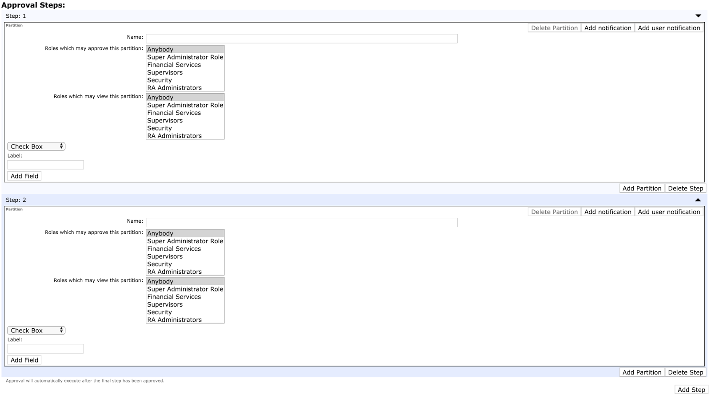

Partitioned Approval Profiles
Description
Partitioned approvals consist of two basic temporal concepts: steps and partitions. The diagram below tries to explain this in simple terms:
The basic concept is that steps are solve sequentially, while partitions are solved in parallel within their step. What this means is that (for example) Step2:Partition1 can't be approved until all three partitions in Step 1 have been approved. Now, how might this be used? Well, let's presume the following organization:
This structure resembles an actual PKI organization far more. The players here are:
Alita - An RA Administrator whose role is to meet certificate applicants after they've enrolled using the RA UI and to verify their identities.
Björn - Works for Financial Services. Does not have any rights to enroll customers, but has been tasked in verifying that customers have payed their fees.
Beatrix - Works for the company's security division. Lacks like Björn the ability to enroll customers, but is tasked in performing background checks on prospective clients.
Cilla - A supervisor who has to approve the work of the previous three. If she's happy, then the customer can next retrieve their certificate.
Now, looking at the graph above you may infer that Alita's, Björn's and Beatrix' tasks are all part of Step 1. The reason for this is that Cilla isn't interested (or allowed) to give her approval until she's verified the results of Alita, Björn and Beatrix.
On the other hand, there is nothing stopping Alita, Björn and Beatrix from solving their tasks in parallel. Once all of them approved their respective partitions, the process will automatically transition to Step 2. Combining these two diagrams we get the following, with blue representing view access and green representing approval rights:
So, what does this look like in EJBCA? Well, an initial Partitioned Profile will look like this:
As you can see above, we initially have a single step containing a single partition, which is the minimum possible. You'll also notice in the center of the partition the two multi-selects that display all available Roles with approval rights. Let's add another step by clicking on the Add Step button on the bottom right:

Next lets create the partitions in Step 1. First we'll click the Add Partition button on the bottom right of that step twice, name the partitions and assign the roles:
Notice above that the roles do not have view rights of each others' partitions (except the RA Administrator partition, who anybody can review), and that the Supervisor role can review all. Next, let's edit Alita's partition so that she can add a bit more information for the records:
By clicking on the Add Field button (which is hidden in the above screenshot behind the drop-down) we can add meta data fields to the partition. In this case we've added a check box, a radio button list to identify the type of identification provided and a free form text field for any other information (such as passport number).
We'll set up Beatrix' and Björn's partition in the same way, then lastly make sure that only the Supervisor group has approval and review access to the final step:
This way the supervisor can review and verify that all previous actions have been performed correctly and without fault before allowing the enrollment process to continue.
Fields
|
Field Name |
Description |
||||||||||||||
|
Name |
The name of the partition. |
||||||||||||||
|
Roles which may approve this partition |
Which roles that are allowed to approve or reject this partition. |
||||||||||||||
|
Roles which may view this partition |
Which roles that are allowed to view this partition. |
||||||||||||||
|
Data fields |
Data that should be collected when approving this partition. Different types of data are supported and as many fields as needed can be added.
|
||||||||||||||
|
Add notification |
Configure a note that will be sent to the administrators who can approve or reject this partition. See Approval Notification about what parameters are possible to use. |
||||||||||||||
|
Add user notification |
Configure a note that will be sent to the end user when the status of this partition is changed. The notification will be sent to the email specified in the end entity. See Approval Notification about what parameters are possible to use. |